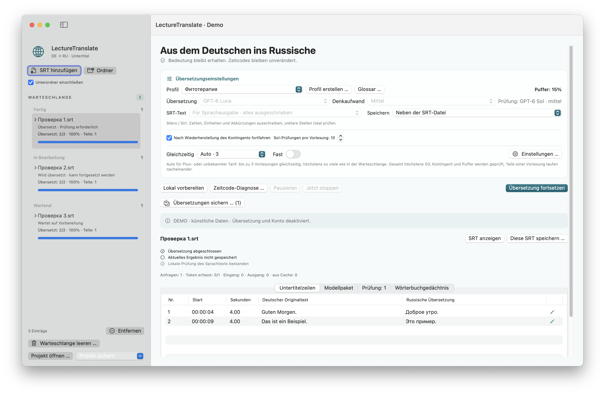

macOS 15+ · Apple Silicon
LectureTranslate
Übersetzt deutsche SRT-Untertitel ins Russische mit Zeitcodes, Warteschlange und Entwurfsprüfung.
Release · 3.5.1Vor dem StartSeparate Verbindung und Anmeldung beim externen Übersetzungsdienst nötig. FFmpeg/ffprobe sind für einzelne Medienfunktionen optional.


So funktioniert es
- SRT öffnen
- Übersetzungsdienst verbinden
- Übersetzte SRT speichern
SRT-Beispiel · kein Live-Ergebnis
1
00:00:01,000 --> 00:00:04,000
Good morning. Today we discuss networks.1
00:00:01,000 --> 00:00:04,000
Guten Morgen. Heute besprechen wir Netzwerke.Erste Schritte
App-Archiv entpacken, Verbindung nach Anleitung einrichten und deutsche .srt hinzufügen. Übersetzungen vor Verwendung prüfen.